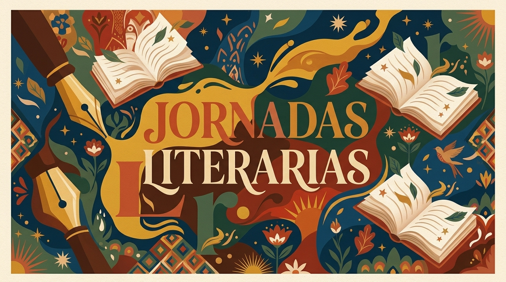

Ayuntamiento de Sevilla · Jornadas Literarias
Voces en tinta y papel
Charlas con autores, talleres de escritura creativa y nuestro concurso literario abierto a vecinos y visitantes.
15–17 de mayo · Casa de la Cultura

Ayuntamiento de Sevilla · Jornadas Literarias
Charlas con autores, talleres de escritura creativa y nuestro concurso literario abierto a vecinos y visitantes.